Auto-encoder的基本思想#
Auto-encoder的训练#
Auto-encoder的是以无监督学习训练的，训练时会把一个Encoder和一个Decoder拼接在一起，将Encoder产生的向量输入Decoder，目标是让Decoder尽可能去复原输入。如果要使得Decoder能复原Encoder的输入，就要求Encoder能有效地将输入编码为向量，所以训练好以后，Encoder就有强大的编码功能，就可以拿去做一些下游任务（这和BERT是类似的）。
其实Auto-encoder和Cycle-GAN的思想也是有点类似的（其实是先有Auto-encoder），Cycle-GAN是希望一个Generator产生的图片经过另一个Generator后能够复原，训练成功后得到两个Generator。
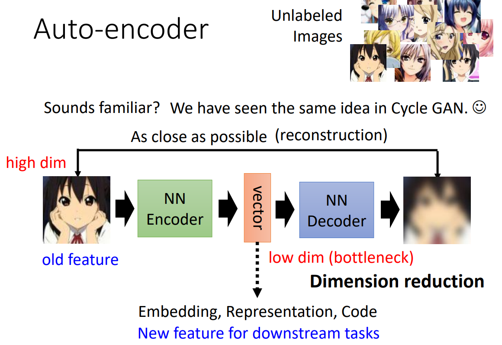为什么Auto-encoder是有效的#
以图像的任务为例，把图片看成高维度的向量，Auto-encoder的Encoder就是将一个高维度的向量降维成低维度的向量。
由于维度降低，必然有信息丢失。Decoder能复原成功，主要是因为图片虽然是高维的向量，但是其变化是有限的，比如下图中也许3x3的图片可能实际上只有4种变化是合乎情理的，所以可以把9维向量降维为2维向量，实际任务中的图片也会符合某种分布，这会限制图片的变化种类，所以用低维度向量来表示图片依然保留了图片的特性，所以Decoder才能复原图片。
那么为什么Auto-encoder中的Encoder在下游任务中是有效的呢？因为训练好的Encoder能有效地将数据降维，从而把复杂的数据用简单的方式表示，所以在下游任务中只用需要一点带标注的资料对模型进行训练就可以得到一个很好的结果。这个其实和BERT很像，BERT也是讲高维的语言信息降维，然后输入给输出层，在微调的时候，由于BERT具有很好的提取特征的能力，只需要很少的训练资料就可以让模型学会下游任务。
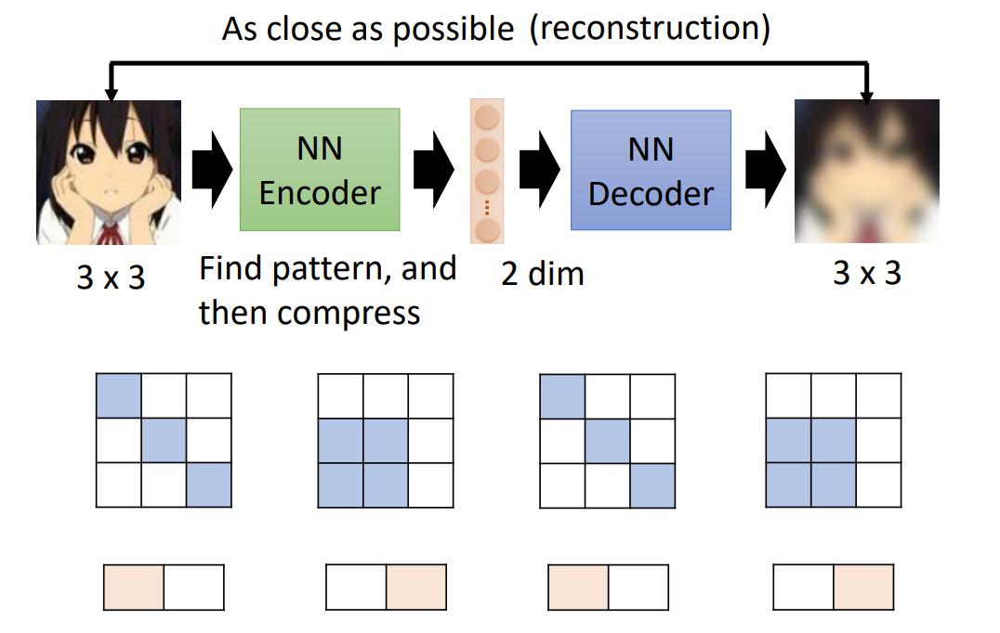Auto-encoder和BERT的关系#
从训练过程来看，在实际训练Auto-encoder的时候，我们其实会把数据（比如图片）加上一点噪声，然后希望Decoder输出的数据能和加上噪声前的数据接近。那么其实Auto-encoder的训练过程就很像BERT了，因为预训练BERT时也是会给数据加上噪声，比如给句子挖空让BERT学做“填空题”。
从作用来看BERT和Encoder的作用类似，都是完成特征的提取；线性输出层和Decoder作用类似，都是对特征进行处理。
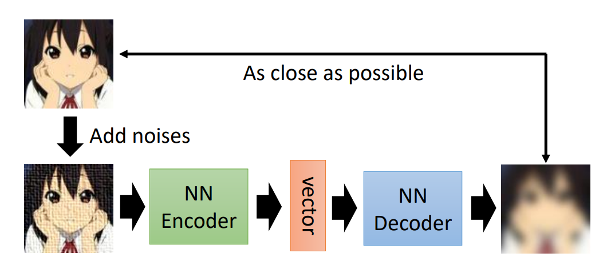 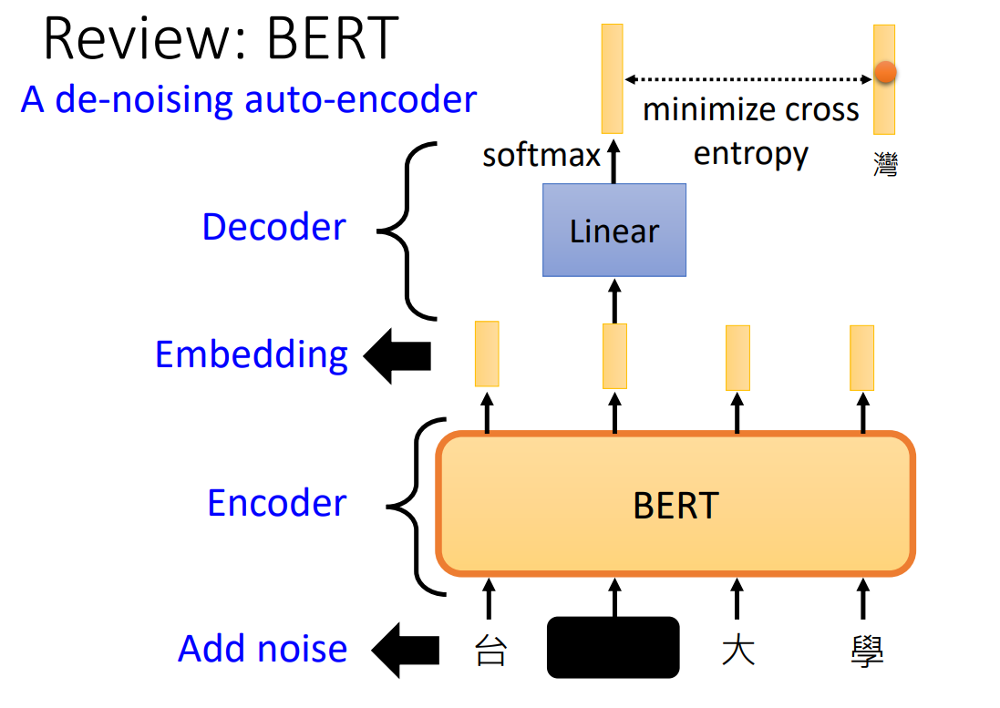Auto-encoder的应用#
Auto-encoder在训练好以后，除了可以将Encoder拿出来迁移到下游任务上，Auto-encoder还有很多其他应用。
Feature Disentanglement#
Feature Disentanglement，字面翻译就是特征解耦，就是将Encoder输出的向量包含的纠缠的特征（我们不知道哪些维度代表哪些特征）进行分离。举例来说，Auto-encoder可以做到输入一段声音，让Encoder输出的向量前一半代表说话内容，后一半代表说话的人。这样就有可能实现语音合成之类的应用，比如输入李宏毅老师说的"How are you?“和新桓结衣说的"Hello”，输出新垣结衣说的"How are you?"。
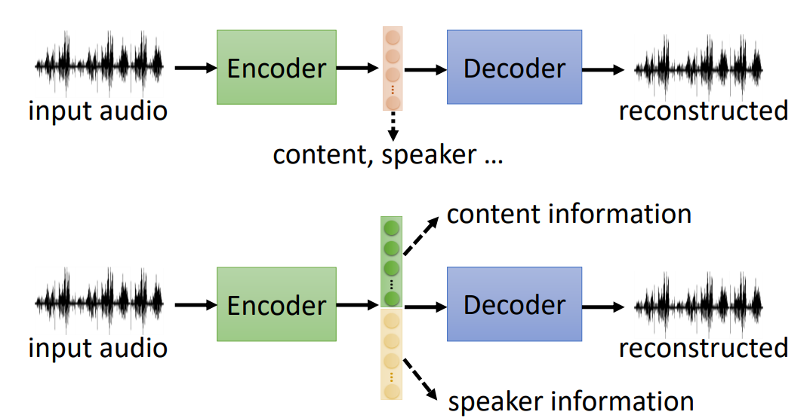 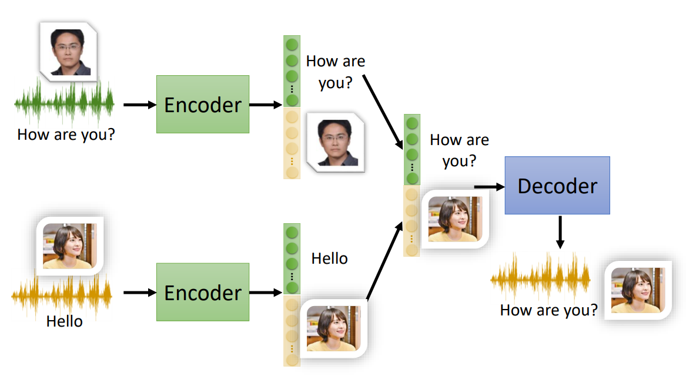Discrete Latent Representation#
一般来说，Encoder输出的向量中的每一个数都是一般的实数，但是有时我们希望输出的向量中每一维都只有0和1，这样可能可以更好地解释Encoder输出，比如输入一张人物头像图片，第一维的1代表有戴眼镜，0代表没有戴眼镜。有时我们甚至可以让输出的向量是一个one hot向量，这样可能可以实现无监督学习训练模型做分类任务，比如手写数字识别，输出十维向量，观察向量中哪一维为1，就可以得出分类结果。
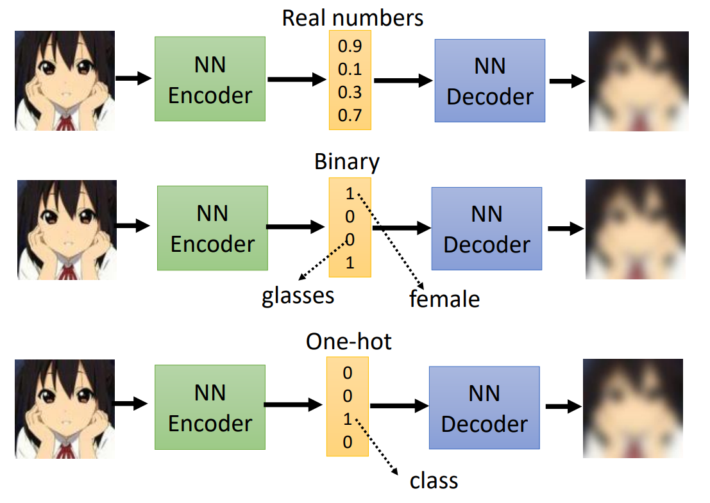在Discrete Representation中，最知名的是VQVAE，Encoder输出一个实数向量，和codebook中的各个向量（也是通过学习得到的）计算相似度（有点像Self-attention，Encoder输出向量是query，codebook中向量是key），将相似度最大的向量拿出来，作为输入Decoder的向量。这可以使得Embedding的种类是有限的，这样可能可以做语音辨识，因为可能可以把Encoder的连续输出对应到离散的音标。
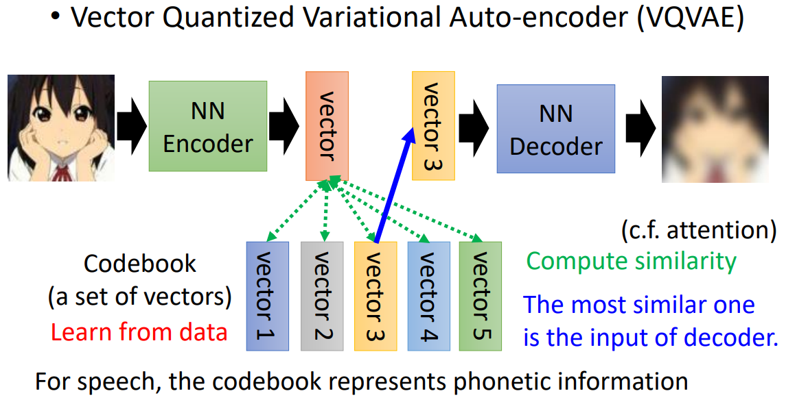除此之外，Auto-encoder的思想在文本上也有很好的应用。我们希望Encoder（此时Encoder和Decoder都是seq2seq模型）可以将输入的文章进行特征提取，从而产生文章摘要，但是如果只是用Auto-Encoder的架构，会发现Encoder和Decoder之间会达成某种“契约”，就是Encoder生成的文字只有Decoder能看懂，而无法被人理解。所以为了产生让人能理解的摘要，需要让产生的摘要经过一个Discriminator，用来判定文章是不是人写的，那么其实仔细一想，这不是Cycle-GAN吗？（^_^）
所以Auto-encoder也是一种理解Cycle-GAN的方式？
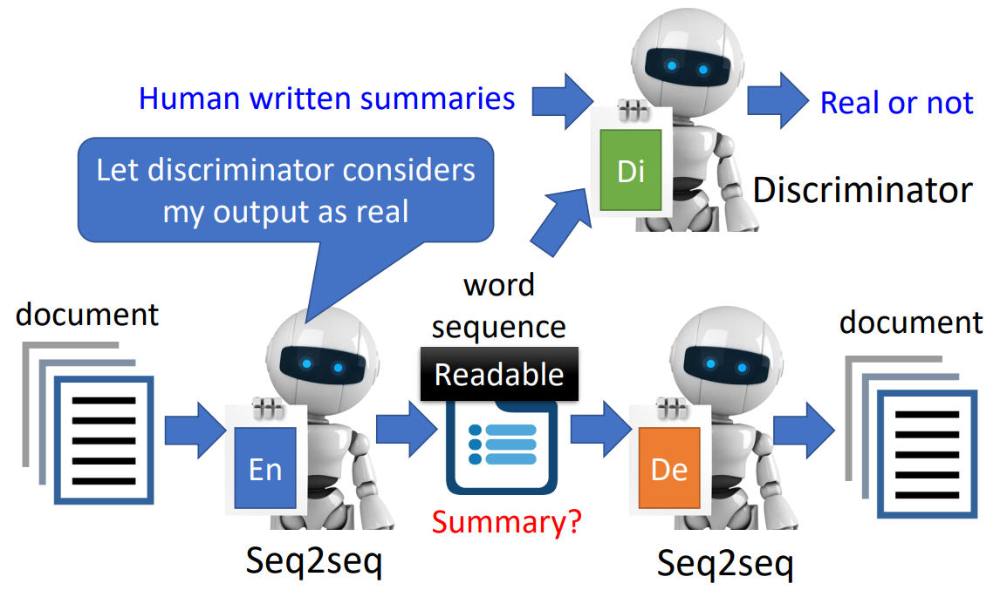Generator#
我们也可以将Decoder单独拿出来，作为一个Generator进行使用，可以实现从某个分布中随机抽取一个向量，然后产生图片，这其实就是Variational auto-encoder（VAE）的想法。
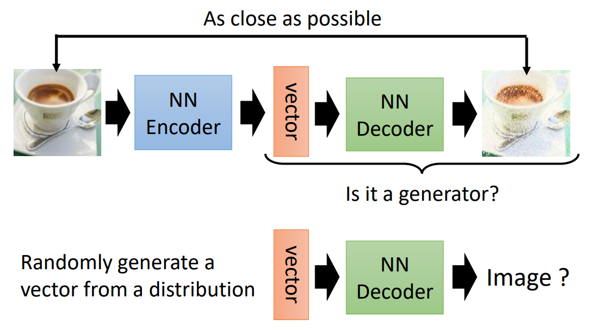Compression#
利用训练好的Auto-encoder，我们可以进行图片的压缩。因为图片经过Encoder时会丢失一部分信息，所以经过Decoder后复原的图像相比原始图片会有一定失真，这是一种有损压缩的方式。
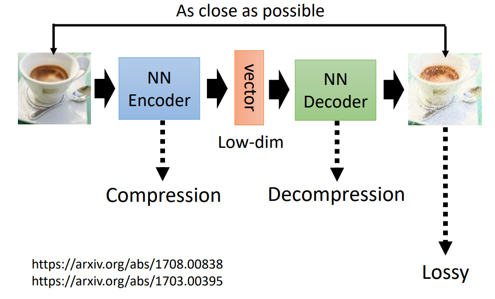Anomaly Detection#
Auto-encoder也可以做异常样本检测，我们把训练的数据的分布看成一个domain，训练成功的Auto-encoder是可以让这个domain上的数据在经过Encoder编码、Decoder解码后复原的。但是如果今天输入的数据不在这个domain内，比如训练的时候输入真人头像，输入二次元人物头像时就很有可能无法复原。应用Anomaly Detection，可以实现诈骗信息、异常交易记录的检测等具体的应用。
异常检测的问题很可能不能用训练分类器的方法去做，因为异常样本往往是很少的，会产生极端的样本不平衡。
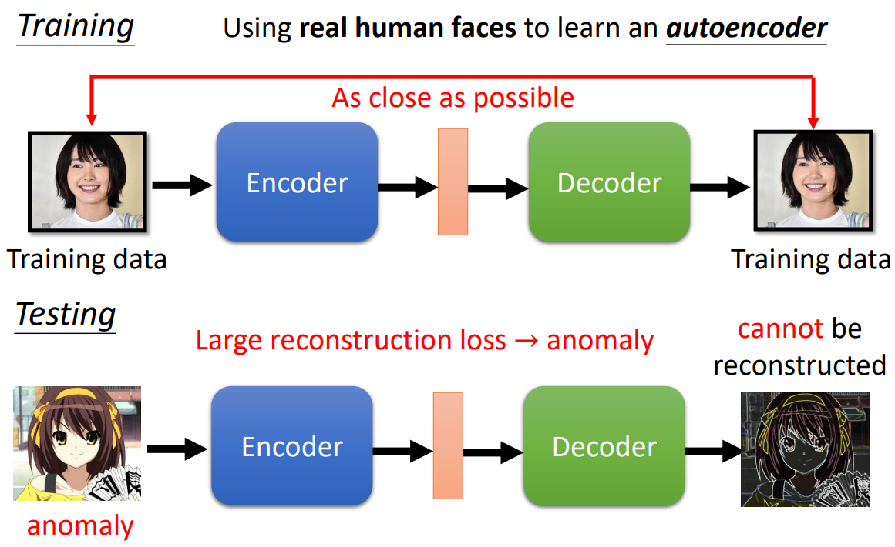作者: 核子